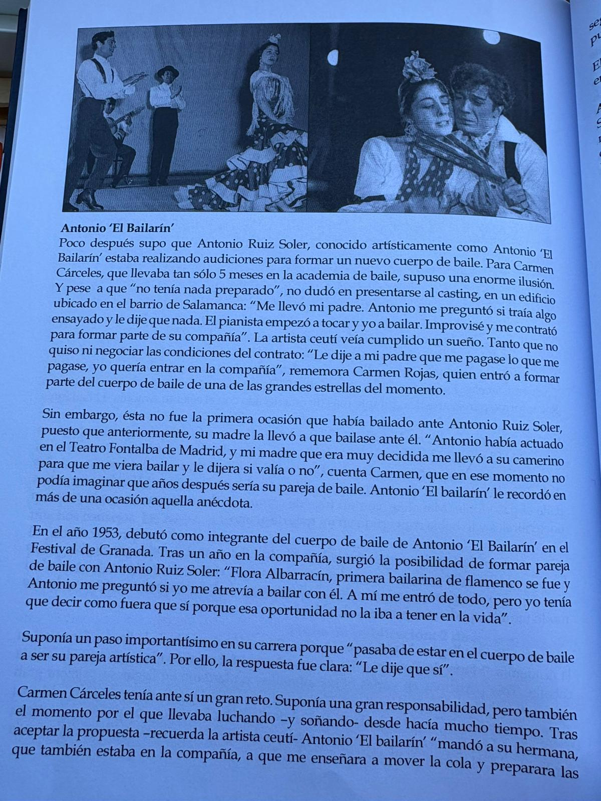
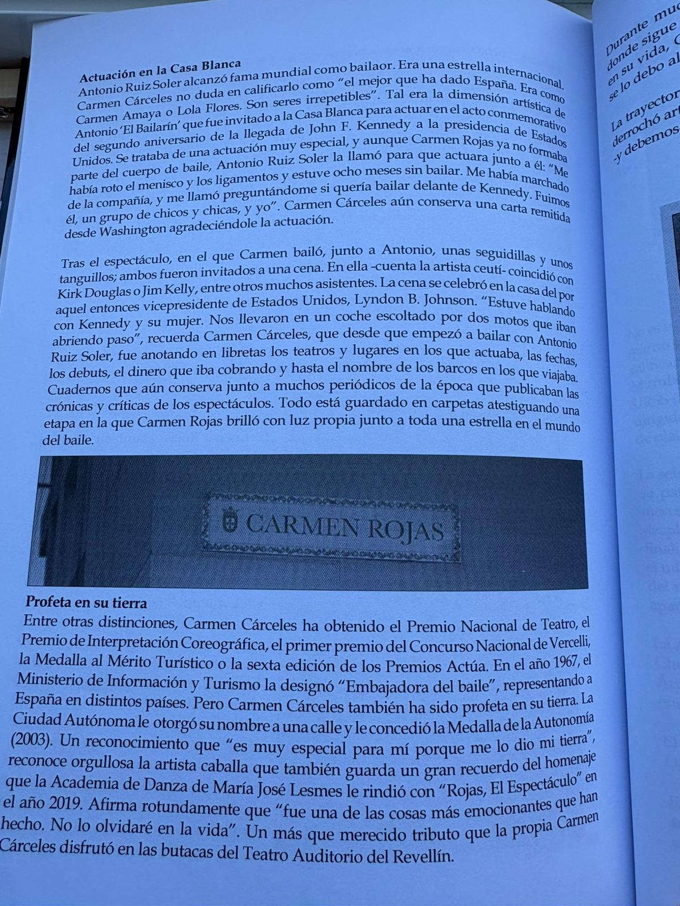

Quién es
Una figura internacional del baile
Carmen Cárceles Escarcena, conocida artísticamente como Carmen Rojas, fue una de las grandes artistas vinculadas a la historia cultural de Ceuta. Su carrera quedó reflejada en recortes de prensa, programas, carteles, fotografías, documentos oficiales y testimonios que hoy permiten reconstruir una trayectoria excepcional.
Recorrido histórico
Trayectoria cronológica
Infancia y orígenes
Ceuta, los primeros años y la vocación
Las primeras imágenes conservadas de Carmen Rojas permiten asomarse a su infancia en Ceuta y a una etapa en la que ya se intuían la elegancia, la disciplina y la expresividad que más tarde la convertirían en una figura internacional del baile.
Etapa con Antonio
El gran salto profesional
Tras su llegada a Madrid y su formación con María de Román, Carmen Rojas se presentó a una audición de Antonio “El Bailarín”. Aquel encuentro resultó decisivo: entró en la compañía y, con el tiempo, pasó de formar parte del cuerpo de baile a convertirse en su pareja artística.
Esa etapa la situó en el centro de una de las trayectorias más prestigiosas del baile español del momento y fue la base de su proyección internacional.
“Le dije que sí”.

Texto biográfico sobre la etapa con Antonio “El Bailarín”
Portadas
Revistas, carteles y cubiertas destacadas
Hemeroteca
Archivo de prensa y hemeroteca
Esta sección reúne artículos, entrevistas, críticas, reseñas y recortes de prensa publicados en distintos países y décadas sobre la trayectoria de Carmen Rojas.
Galería
Fotografías y archivo visual
Archivo audiovisual
Vídeos y documentos en movimiento
Legado
Memoria, reconocimientos y permanencia
La trayectoria de Carmen Rojas dejó una huella profunda en la historia del baile español y en la memoria cultural de Ceuta. Premios, distinciones, documentos y homenajes posteriores dan cuenta del valor de una artista que llevó el nombre de su tierra por medio mundo.
Su historia no solo pertenece al escenario, sino también al patrimonio cultural compartido.
“Todo se lo debo al baile”.

Reconocimientos y legado artístico